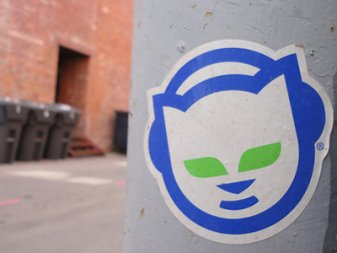

Netaudio em Portugal
Netaudio / Netlabel
Editoras de música
download legal e gratuito na internet

Netaudio
"Explora" a incapacidade da industria musical em se adaptar às novas tecnologias
Netaudio
Evolução da sociedade para um custo quase zero em produzir e distribuir nova música
(software audio gratuito, hosting web gratuito, acesso internet barato, comunicação nas redes sociais)
Netaudio
Movimento cultura livre
democratização da distribuição de audio na internet
Netaudio
Sem restrições de "popularidade" da industria musical
Netaudio
Popularização de nichos de novos géneros musicais na internet
Motivação
- Partilhar própria música no mundo sem aprovação de intermediários
- Promover novos artistas
- Descobrir nova música e novos géneros musicais
- Partilhar conteúdos legalmente e sem restrições de direitos de autor
Netlabels Portuguesas
http://beatsplayfree.blogspot.pt
44 netlabels portuguesas conhecidas
24 com páginas online
10 activas (com edições em 2016)
Enough Records
Demoscene & Música Trackada
Enough Radio 2000-2001
Enough Records 2001-2016
Enough Records
391 albums
20 compilações
23 mixtapes
Enough Records
scene.org, freemusicarchive internet archive, sonicsquirrel.net, jamendo, soundcloud, bandcamp, routenote (spotify, apple music, amazon, youtube, deezer, rdio, wimp, tidal)
Enough Records
sem fins lucrativos (artista tem a prioridade de recusar ou controlar eles próprios a edição nas plataformas comerciais)
Netaudio em Portugal
http://enoughrecords.scene.org
http://beatsplayfree.blogspot.pt